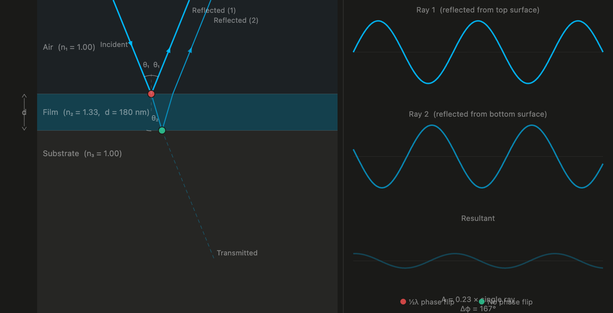
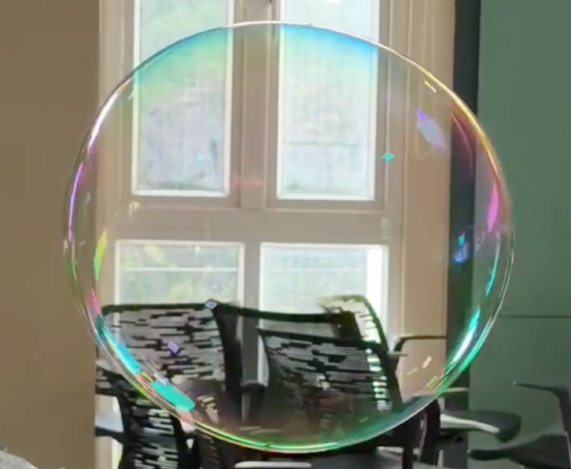

Carpenter bees are one of the creatures I was ignorant of until I found one in Cubbon Park. Why are they called carpenter bees? Because they burrow into wood. In Cubbon Park, you can see their nests on the wooden sculptures near the bandstand — I see them every other day while commuting. When I first spotted one, I mistook it for a beetle, but the eyes, antennae, and legs reminded me of honeybees. It was the wings that caught my attention. From different angles, the wings show different shades of purple, blue, and green. I knew it was something called structural colour, but I wasn't sure what kind of structure it was.
So, recently at work, we were asked to develop a nature walk in Cubbon Park, in collaboration with Cubbon Walks, with a focus on physics — and carpenter bees were at the top of my list. Their wing colour is due to one of my favourite physical phenomena, interference, thin-film interference to be exact.
The physics
What is thin-film interference?
To understand thin-film interference, let's take one term at a time. What are thin films? As the name suggests, they are films that are really thin — around hundreds of nanometres. Examples we might see every day include the layer of oil on a puddle after rain, or a soap bubble. What's common between these two? They are iridescent: their colours shift when you look at them from oblique angles or when they are illuminated at an angle. They look like they have trapped a rainbow.
That's where interference comes in. To put it simply, interference is when a wave overlaps with another wave of the same wavelength. If their crests and troughs line up — if they are in phase — they amplify each other: constructive interference. If they are out of phase, they cancel each other out: destructive interference. In a thin film, when light falls on it, some reflects from the top surface, while the rest travels through and reflects from the bottom surface. Those two reflected rays then interfere with each other. Depending on the thickness of the film and the angle of the light, different wavelengths (colours) get amplified or cancelled — and that's why the colour you see changes as you shift your angle.

The thin-film interference visualiser — adjust angle, thickness, and refractive index to explore how colours emerge.
Inside the wing
How does this happen in a carpenter bee's wing?
Luckily, I found a paper answering this question. It was by Stavenga et al. (2023), examining Xylocopa latipes (the genus name Xylocopa means "wood-cutter"), a carpenter bee species found in Southeast Asia. The one we have in Cubbon Park might be Xylocopa tenuiscapa, based on what I could gather from iNaturalist.
In the paper, an electron micrograph shows the cross-section of the carpenter bee wing. Carpenter bee wings are made of chitin, a strong polysaccharide that makes up the exoskeleton of all insects. The wing looks dark because of a pigment called melanin. The micrograph reveals that this melanin is not distributed uniformly, but in distinct striations, approximately 100 nm thick, with different regions containing varying amounts of melanin.
When the melanin content of chitin changes, the refractive index also changes — giving the wing sheets of thin films with different refractive indices stacked on top of each other. A stack of really durable soap bubbles.


Putting it together
Why the colour shifts
When light falls on the wing at oblique angles, some reflects from the top surface while some travels through and reflects from one of the underlying layers. Because the light travels different distances through the wing, the outgoing rays have a phase difference — and whether that difference produces constructive or destructive interference depends on both the thickness of each layer and the angle of incidence.
The key constraint: the film thickness must be comparable to the wavelength of visible light, roughly 400–700 nm. If the layers are too thin or too thick, iridescence disappears entirely. Carpenter bee wings sit right in that window, which is why the shimmer is so vivid.
Next time you see a carpenter bee with shiny wings, you'll know exactly why — and perhaps you'll find yourself tilting your head to chase the colour as it shifts.